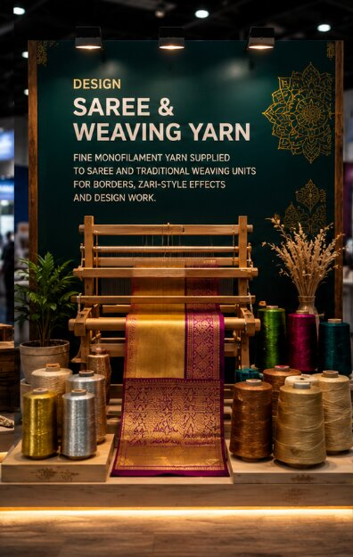
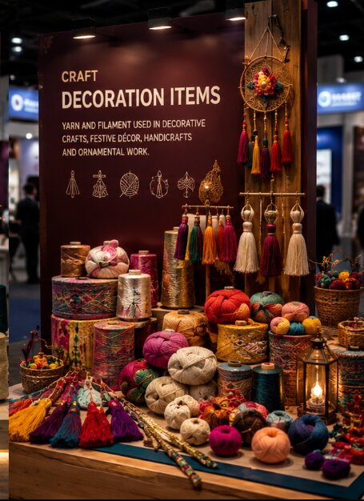
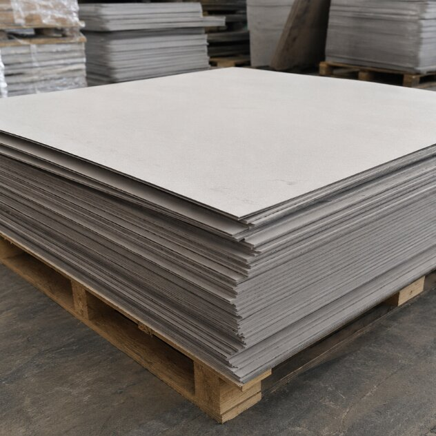
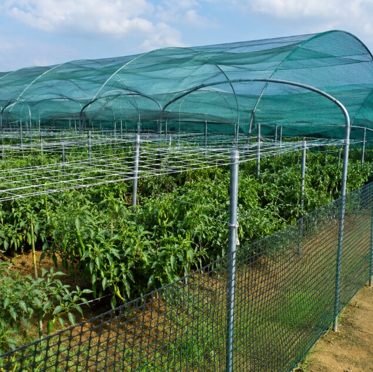
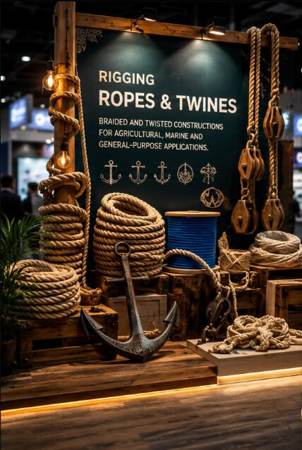

Yarn Manufacturing
Custom monofilament and multifilament yarn production, drawn and wound to your specification.
Request a quote ↗MONOFILAMENT YARN · HANKS · FISHING NETS · 3RD GENERATION MANUFACTURER
FIDA specialises in monofilament yarn, hanks, fishing nets and multipurpose netting — engineered for consistency across every size in our range, from 0.10mm to 4.50mm, and supplied across India and Asia.
FEATURED PRODUCTS
MORE WAYS WE PUT YARN TO WORK
Custom monofilament and multifilament yarn production, drawn and wound to your specification.
Request a quote ↗
Specialty fine-count yarn supplied to saree and traditional weaving units for design and border work.
Request a quote ↗
Filament and yarn for decorative crafts, festive décor and ornamental handmade work.
Request a quote ↗
Flat board and sheet-support netting components for construction and fabrication use.
Request a quote ↗
Shade nets, crop-support nets, fencing and multipurpose netting for farms and plantations.
Request a quote ↗
Braided and twisted ropes and twines for marine, agricultural and general-purpose use.
Request a quote ↗CUSTOM SPECIFICATION
Every FIDA product can be tailored — size, colour, material and packaging — to your application. Tell us the requirement and we'll recommend the right build.
Request a custom quote ↗